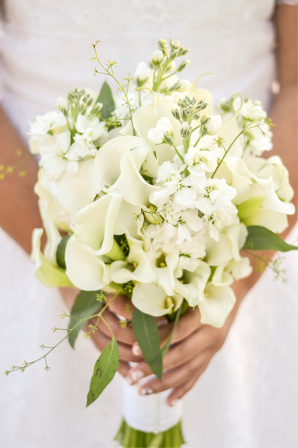

Concept
私たちShiroは、白いお花だけを取り扱うフラワーショップです。
色とりどりの花束も素敵だけれど、洗練された「白」の美しさを感じてほしい。
「白」に対する愛から生まれた静寂な時間が流れる店へ、ぜひお越しください。
Work
オーダーメイドでのブーケ・アレンジメントのデザインのほか、
ウェディングやイベントの装花なども行なっています。
一人一人にあったご提案をさせていただきます。

Gift
花束をお送りしたいお相手、伝えたいお気持ちに合わせたプレゼント用花束のアレンジメントをさせていただきます。花言葉などの豆知識もお伝えします。
Wedding
ウエディングドレスに合わせたブーケや式場の雰囲気に合う装花をご提案。お打ち合わせの流れや回数、費用などにつきましてはお問い合わせください。

Decoration
お写真を彩るお花を一輪から販売。一定期間のご契約で定期的にご自宅へ配送させていただくことも可能です。

For yourself
お部屋の雰囲気やライフスタイルをお聞きしてご自宅用の花束をご提案し、少しでも長く咲かせるコツもお教えします。花束に合った花瓶をご提案することも可能です。
Florist
Shiro専属のフローリストたちをご紹介。
得意の分野であなたのオーダーを最大限に叶えます。
Shiyu
お花茶屋大学フラワーアレンジメント科を卒業後、さまざまな白い花を探すために世界を一周し、Shiroの創業者となる。
Mao
花の魅力に惹かれ、空間デザインの世界からフローリストの道を歩む。主に結婚式やイベントで使用するお花のディレクション担当。
Omichan
フローリスト兼ガーデナーという特殊な経歴をもつ。豊富な知識と技術でお客様のオーダーを叶える。
Shop information
Shiroの店舗情報をご紹介します。

| 住所 | 〒810-0001 福岡県福岡市中央区天神0-0-0 |
|---|---|
| 電話番号 | 0120-000-000 |
| 営業時間 | 11:00-20:30 （定休日：水曜日） |
| アクセス | 天神駅12a出口から徒歩6分 東京駅8b出口から徒歩12分 |
Contact us
イベントや結婚式でご利用する装花のご相談や、
フラワーアレンジメントのご予約などはこちらからお問い合わせください。
お問い合わせ